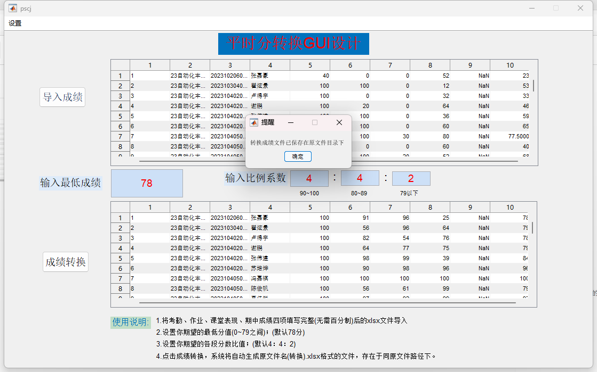

欢迎来到Scores软件
我们致力于创造简单而优雅的软件解决方案。
本网站仅用于Scores软件介绍与获取，不能用于任何形式的商业用途。
我们的软件
软件更新日志
- 版本 1.0
- 初始版本；
- 版本 2.0
- 增加了分段人数比例调节功能;
- 版本 2.1
- 新增了可读取表格格式 (.xls);
- 更新了作者联系方式，新增软件主页
技术支持
如有问题，请先检查文件格式，若仍未解决，可尝试联系我们。
软件界面

安装教程
功能演示
下载Scores软件
目前软件只开发了Windows版本，其他操作系统用户请各显神通：